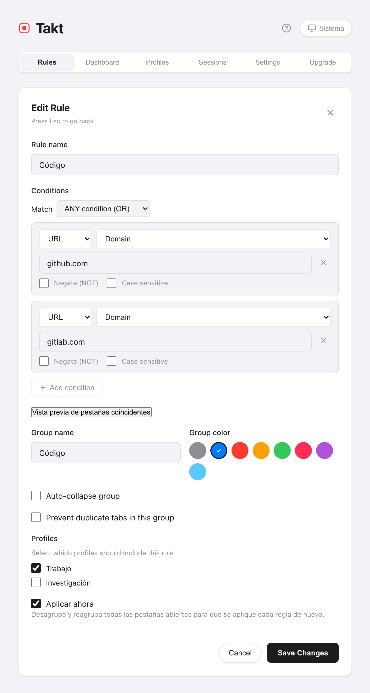
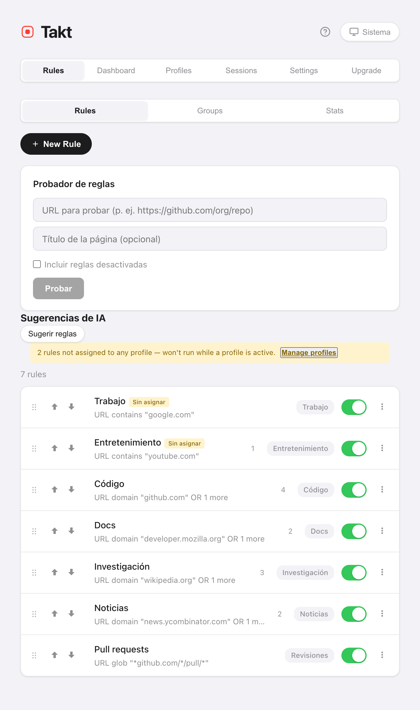

Respuesta corta: instala Takt, crea una regla como URL domain github.com → grupo "Code", azul y guárdala. A partir de ahí, cada pestaña de GitHub va al grupo azul "Code" mientras carga.
- Free: 5 reglas, con coincidencia por contiene, exacta o dominio.
- Premium: reglas ilimitadas, patrones glob y regex, coincidencia por título de página y hasta 10 condiciones AND/OR.
- La coincidencia se calcula en tu equipo. Sin cuenta, sin analíticas.
¿Por qué los grupos de pestañas de Chrome no se ordenan solos?
Los grupos de pestañas de Chrome son un archivador sin archivero. Clic derecho, "Añadir pestaña al grupo", y otra vez. Abre veinte enlaces en una mañana de trabajo y archivarás veinte veces o, lo más probable, ninguna.
Chrome tenía una función de IA, "Organizar pestañas", para una limpieza puntual, pero Google la retiró en 2025. Hoy Chrome ya no agrupa las pestañas por ti. Y ni siquiera esa función seguía instrucciones: no podías decirle "las pull requests siempre van a Reviews". Una regla sí.
¿Cómo creo una regla para agrupar pestañas?
- Instala Takt desde Chrome Web Store.
- Abre la página de opciones de Takt y haz clic en New Rule.
- Añade una condición. URL · Domain · github.com captura github.com y todos sus subdominios.
- Ponle nombre al grupo, elige un color y guarda.
Deja marcada la casilla Aplicar ahora y Takt reagrupa al momento las pestañas que ya tienes abiertas. Las nuevas se agrupan al cargarse.

¿Qué tipo de coincidencia debo usar?
A la mayoría le basta con Domain. Recurre a los demás cuando un dominio se queda demasiado amplio.
| Tipo de coincidencia | Patrón | Captura | Plan |
|---|---|---|---|
| Domain | google.com | docs.google.com, mail.google.com, google.com | Free |
| Contains | localhost | http://localhost:3000/api | Free |
| Exact | https://mail.google.com/mail/u/0/#inbox | Solo esa URL | Free |
| Glob | *github.com/*/pull/* | Todas las pull requests, de cualquier repositorio | Premium |
| Regex | jira\..*/browse/PROJ-\d+ | Las incidencias de un proyecto | Premium |
Cualquier condición se puede negar (la URL NO contiene google.com) o hacer sensible a mayúsculas. Premium añade la coincidencia por título de la página y la combinación de hasta 10 condiciones con AND u OR.
¿Y si dos reglas coinciden con la misma pestaña?
Gana la primera coincidencia. Las reglas se comprueban desde arriba de la lista hacia abajo y la comprobación se detiene en el primer acierto.
Así que ordénalas de la más específica a la más general. Una regla "Reviews" para pull requests tiene que estar por encima de una regla "Code" para todo GitHub; si no, todas las pull requests acaban en "Code". Para mover una regla, arrástrala o usa los botones ↑/↓.

¿Cómo compruebo una regla antes de fiarme de ella?
De dos formas, las dos en la página Rules:
- Probador de reglas. Pega una URL (y, si quieres, un título de página). Takt te dice qué regla se aplicaría.
- Vista previa de pestañas coincidentes. Dentro del editor, muestra las pestañas ya abiertas que la regla capturaría, antes de guardar.
Cinco reglas para empezar
Cinco reglas cubren la mayoría de las jornadas de trabajo, y cinco es justo el límite del plan Free.
| Grupo | Condición |
|---|---|
| Code | Domain github.com |
| Documentación | Domain developer.mozilla.org |
| Correo y calendario | Domain google.com |
| Desarrollo local | Contains localhost |
| Ver más tarde | Domain youtube.com |
¿No sabes qué escribir? El panel Estadísticas te sugiere reglas a partir de los sitios que ya tienes abiertos.
Lo que las reglas no hacen
Las reglas capturan lo que les indicas. Una pestaña de un sitio para el que nunca escribiste una regla se queda sin agrupar. Si prefieres no escribir reglas, cambia el modo de agrupación a Categoría o IA.
Escribe una regla. Mira cómo la siguiente pestaña se archiva sola.
Añadir Takt a Chrome, gratisPreguntas frecuentes
¿Puede Chrome agrupar pestañas automáticamente sin una extensión?
No. Chrome sugería grupos con una función de IA, "Organizar pestañas", pero Google la retiró. Hoy los grupos de pestañas de Chrome se crean a mano. Una extensión basada en reglas como Takt agrupa las pestañas automáticamente y sigue enviando los mismos sitios al mismo grupo.
¿Cuántas reglas puedo crear gratis?
5 reglas, con una condición cada una y coincidencia por contiene, exacta o dominio. Premium (3 $/mes o 30 $/año) elimina el límite.
¿Puedo pausar una regla sin borrarla?
Sí. Cada regla tiene un interruptor de activación en la lista. Una regla desactivada conserva su configuración y deja de aplicarse.
¿Envía Takt mis URL a algún sitio para aplicar las reglas?
No. La coincidencia se calcula en tu navegador con reglas guardadas localmente. Consulta cómo mantiene Takt tus datos en local.